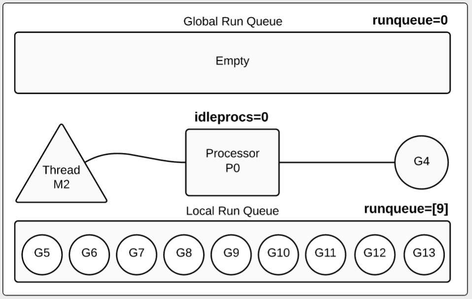
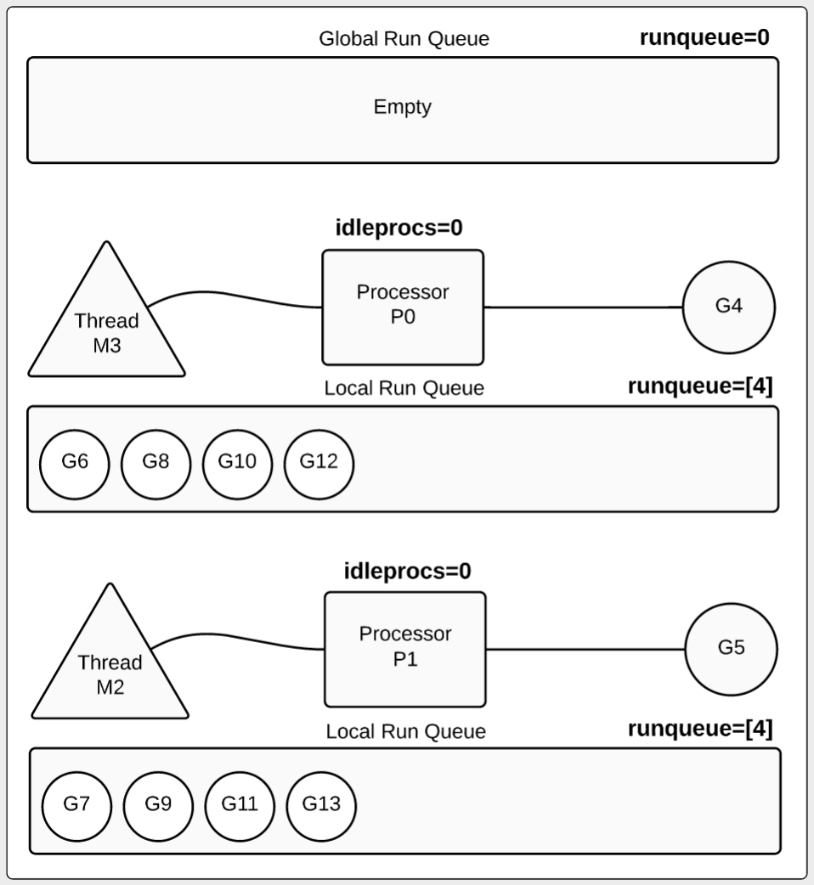
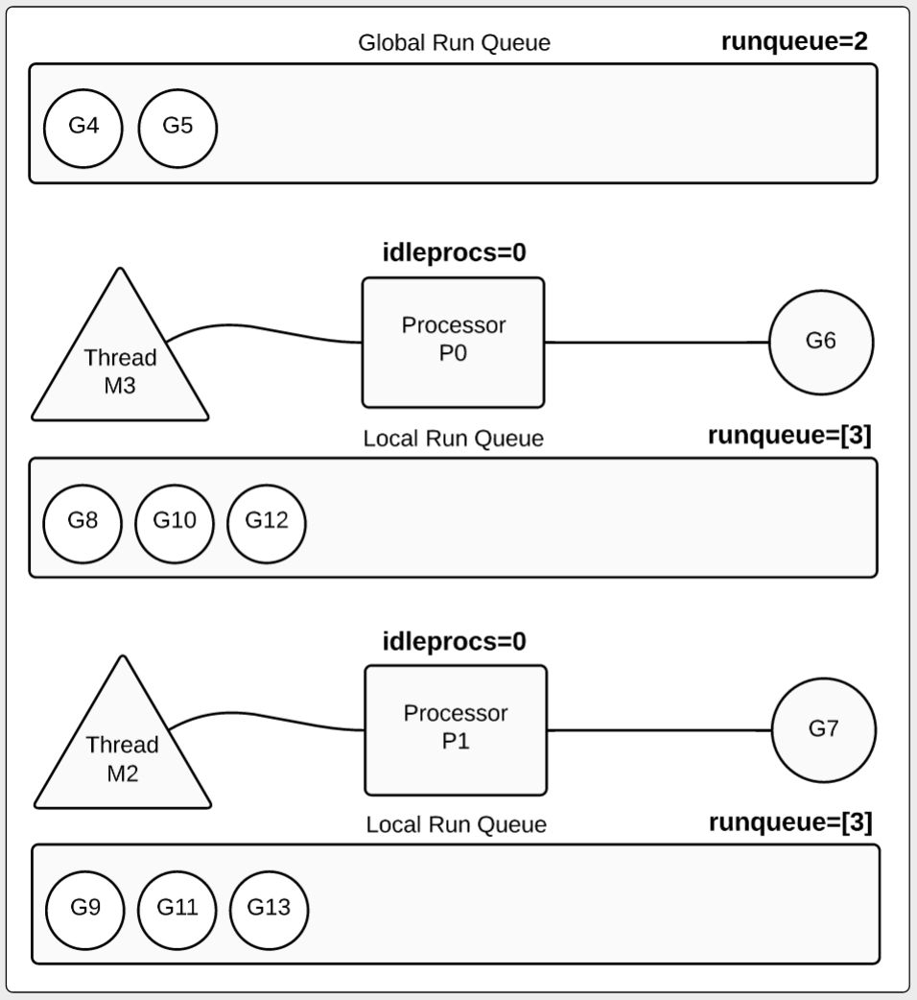
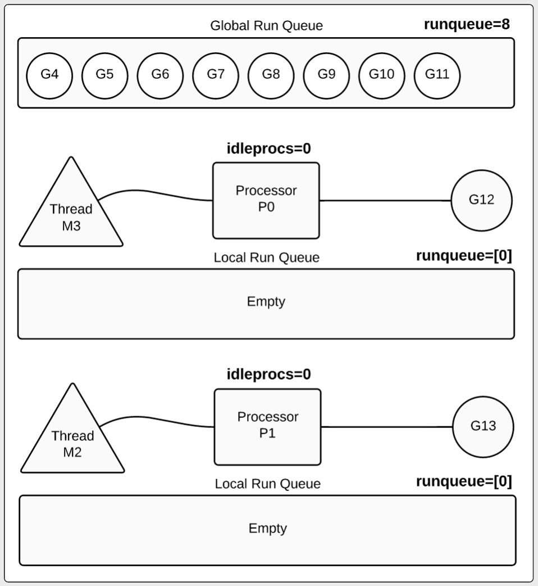
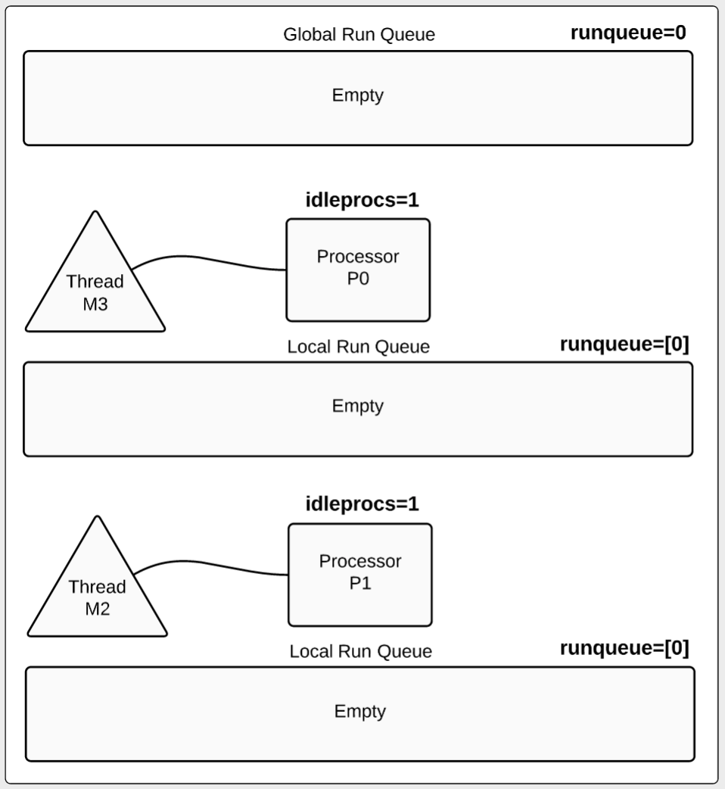

这是William Kennedy写的第二篇文章： Scheduler Tracing In Go, 第一篇为 Stack Traces In Go。
本文主要介绍如何跟踪Go的调度器Scheduler的活动。
介绍
我喜欢Go的原因之一就是能够产生概要(profiling)和调试信息。当你的程序运行时，GODEBUG环境变量可以产生运行时的调试信息。你可以请求垃圾回收器和调度器(scheduler)的摘要信息和细节。关键是你不需要额外创建单独的编译程序就可以实现。
在本文中，我将演示如何理解一个简单的并发Go程序的调度器跟踪信息。如果你已经有Go调度器的基本概念，对阅读本文会很有帮助， 在开始下面的介绍前我建议你阅读下面的两篇文章：
- Concurrency, Goroutines and GOMAXPROCS
- Go Scheduler
代码
下面的代码就是用来演示用的例子。
列表1 1 2 3 4 5 6 7 8 9 10 11 12 13 14 15 16 17 18 19 20 21 22 23 24 25 26 27 28 29 30 31
| package main import ( "sync" "time" ) func main() { var wg sync.WaitGroup wg.Add(10) for i := 0; i < 10; i++ { go work(&wg) } wg.Wait() time.Sleep(3 * time.Second) } func work(wg *sync.WaitGroup) { time.Sleep(time.Second) var counter int for i := 0; i < 1e10; i++ { counter++ } wg.Done() }
|
列表1的第12行使用一个for循环创建10个goroutine，第16行main函数中等待所有的goroutine完成任务。第22行的work函数先sleep 1秒，然后计数 10亿次。一旦计数完成，调用waitGroup的Done方法然后返回。
首先go build程序，然后运行时设置GODEBUG环境变量。这个变量会被运行时读取，所以Go命令也会产生跟踪信息。如果在运行go run命令的时候设置了GODEBUG变量，在程序运行之前就会看到跟踪信息。
所以还是让我们先编译程序：
调度器摘要信息
schedtrace参数告诉运行时打印一行调度器的摘要信息到标准err输出中，时间间隔可以指定，单位毫秒，如下所示：
1
| GOMAXPROCS=1 GODEBUG=schedtrace=1000 ./example
|
译者注： 如果在windows下可以运行 set GOMAXPROCS=1 && set GODEBUG=schedtrace=1000 && example
程序开始后每个一秒就会打印一行调度器的概要信息，程序本身没有任何输出，所以我们只关注输出的跟踪信息。让我们先看前两行：
1 2 3 4 5
| SCHED 0ms: gomaxprocs=1 idleprocs=0 threads=2 spinningthreads=0 idlethreads=0 runqueue=0 [1] SCHED 1009ms: gomaxprocs=1 idleprocs=0 threads=3 spinningthreads=0 idlethreads=1 runqueue=0 [9]
|
让我们分解每一个项，看看它们分别代表什么含义。
| 输出项 |
意义 |
| 1009ms |
自从程序开始的毫秒数 |
| gomaxprocs=1 |
配置的处理器数(逻辑的processor，也就是Go模型中的P,会通过操作系统的线程绑定到一个物理处理器上) |
| threads=3 |
运行期管理的线程数，目前三个线程 |
| idlethreads=1 |
空闲的线程数,当前一个线程空闲，两个忙 |
| idleprocs=0 |
空闲的处理器数,当前0个空闲 |
| runqueue=0 |
在全局的run队列中的goroutine数，目前所有的goroutine都被移动到本地run队列 |
| [9] |
本地run队列中的goroutine数，目前9个goroutine在本地run队列中等待 |
Go运行时给了我们很多有用的摘要信息。当我们看第一秒的跟踪数据时，我们看到一个goroutine正在运行，而其它9个都在等待：

图1中处理器由字符P代表，线程由M代表，goroutine由G代表。我们看到全局run队列为空，处理器正在执行一个goroutine。其余9在本地队列中等待。
如果我们配置多个处理器会怎样呢？让我们增加GOMAXPROCS 看看输出结果:
1 2 3 4 5 6 7 8 9 10 11 12 13 14 15 16 17 18 19 20 21 22 23 24 25 26 27 28 29 30 31 32 33 34
| GOMAXPROCS=2 GODEBUG=schedtrace=1000 ./example SCHED 0ms: gomaxprocs=2 idleprocs=1 threads=2 spinningthreads=0 idlethreads=0 runqueue=0 [0 0] SCHED 1002ms: gomaxprocs=2 idleprocs=0 threads=4 spinningthreads=1 idlethreads=1 runqueue=0 [0 4] SCHED 2006ms: gomaxprocs=2 idleprocs=0 threads=4 spinningthreads=0 idlethreads=1 runqueue=0 [4 4] … SCHED 6024ms: gomaxprocs=2 idleprocs=0 threads=4 spinningthreads=0 idlethreads=1 runqueue=2 [3 3] … SCHED 10049ms: gomaxprocs=2 idleprocs=0 threads=4 spinningthreads=0 idlethreads=1 runqueue=4 [2 2] … SCHED 13067ms: gomaxprocs=2 idleprocs=0 threads=4 spinningthreads=0 idlethreads=1 runqueue=6 [1 1] … SCHED 17084ms: gomaxprocs=2 idleprocs=0 threads=4 spinningthreads=0 idlethreads=1 runqueue=8 [0 0] … SCHED 21100ms: gomaxprocs=2 idleprocs=2 threads=4 spinningthreads=0 idlethreads=2 runqueue=0 [0 0]
|
让我们将视线放在第二秒：
1 2 3 4 5 6 7 8 9 10
| SCHED 2002ms: gomaxprocs=2 idleprocs=0 threads=4 spinningthreads=0 idlethreads=1 runqueue=0 [4 4] 2002ms : This is the trace for the 2 second mark. gomaxprocs=2 : 2 processors are configured for this program. threads=4 : 4 threads exist. 2 for processors and 2 for the runtime. idlethreads=1 : 1 idle thread (3 threads running). idleprocs=0 : 0 processors are idle (2 processors busy). runqueue=0 : All runnable goroutines have been moved to a local run queue. [4 4] : 4 goroutines are waiting inside each local run queue.
|

让我们看第二秒的信息，可以看到goroutine是如何被处理器运行的。我们也可以看到有8个goroutine在本地run队列中等待，每个本地run队列包含4个等待的goroutine。
让我们再来看第6秒的信息：
1 2 3 4 5 6
| SCHED 6024ms: gomaxprocs=2 idleprocs=0 threads=4 spinningthreads=0 idlethreads=1 runqueue=2 [3 3] idleprocs=0 : 0 processors are idle (2 processors busy). runqueue=2 : 2 goroutines returned and are waiting to be terminated. [3 3] : 3 goroutines are waiting inside each local run queue.
|

第6秒数据有些变化，如图3所示，两个goroutine完成了它们的任务，放回到全局run队列中。当然我们还是有两个goruntine在运行(G6,G7)，每个P运行一个。每个本地run队列中还有3个goroutine在等待。
注意:
在很多情况下goroutine在终止前并没有被放回到全局run队列。本文中的例子比较特殊，它的方法体是一个for循环，并没有调用其它函数，而且运行时间超过10ms。10毫秒是调度器的调度标杆，过了10毫秒的执行时间，调度器就会尝试占用(preempt)这个goroutine。本例中的goroutine没有被占用是因为它们没有调用其它函数。本例中一旦goroutine执行到wg.Done调用，它们立即被占用，然后移动到全局run队列等待终止。
在17秒我们看到只有两个goroutine还在运行:
1 2 3 4 5 6
| SCHED 17084ms: gomaxprocs=2 idleprocs=0 threads=4 spinningthreads=0 idlethreads=1 runqueue=8 [0 0] idleprocs=0 : 0 processors are idle (2 processors busy). runqueue=8 : 8 goroutines returned and are waiting to be terminated. [0 0] : No goroutines are waiting inside any local run queue.
|

从图4可以看出，8个goroutine被移动到全局run队列等待终止。两个goroutine(G12和G13)还在运行，本地run队列都为空。
最后在第21秒：
1 2 3 4 5 6
| SCHED 21100ms: gomaxprocs=2 idleprocs=2 threads=4 spinningthreads=0 idlethreads=2 runqueue=0 [0 0] idleprocs=2 : 2 processors are idle (0 processors busy). runqueue=0 : All the goroutines that were in the queue have been terminated. [0 0] : No goroutines are waiting inside any local run queue.
|

如图5所示，这时那10个goroutine都已经完成任务被终止。
调度器跟踪信息的细节
调度器的摘要信息很有帮助，但是有时候你需要更深入的了解它的细节。在这种情况下，我们可以使用scheddetail 参数，可以提供处理器P,线程M和goroutine G的细节。让我们再运行一下程序，增加scheddetail 参数:
1
| GOMAXPROCS=2 GODEBUG=schedtrace=1000,scheddetail=1 ./example
|
下面的日志是第4秒的输出：
1 2 3 4 5 6 7 8 9 10 11 12 13 14 15 16 17 18 19 20 21 22
| SCHED 4028ms: gomaxprocs=2 idleprocs=0 threads=4 spinningthreads=0 idlethreads=1 runqueue=2 gcwaiting=0 nmidlelocked=0 stopwait=0 sysmonwait=0 P0: status=1 schedtick=10 syscalltick=0 m=3 runqsize=3 gfreecnt=0 P1: status=1 schedtick=10 syscalltick=1 m=2 runqsize=3 gfreecnt=0 M3: p=0 curg=4 mallocing=0 throwing=0 gcing=0 locks=0 dying=0 helpgc=0 spinning=0 blocked=0 lockedg=-1 M2: p=1 curg=10 mallocing=0 throwing=0 gcing=0 locks=0 dying=0 helpgc=0 spinning=0 blocked=0 lockedg=-1 M1: p=-1 curg=-1 mallocing=0 throwing=0 gcing=0 locks=1 dying=0 helpgc=0 spinning=0 blocked=0 lockedg=-1 M0: p=-1 curg=-1 mallocing=0 throwing=0 gcing=0 locks=0 dying=0 helpgc=0 spinning=0 blocked=0 lockedg=-1 G1: status=4(semacquire) m=-1 lockedm=-1 G2: status=4(force gc (idle)) m=-1 lockedm=-1 G3: status=4(GC sweep wait) m=-1 lockedm=-1 G4: status=2(sleep) m=3 lockedm=-1 G5: status=1(sleep) m=-1 lockedm=-1 G6: status=1(stack growth) m=-1 lockedm=-1 G7: status=1(sleep) m=-1 lockedm=-1 G8: status=1(sleep) m=-1 lockedm=-1 G9: status=1(stack growth) m=-1 lockedm=-1 G10: status=2(sleep) m=2 lockedm=-1 G11: status=1(sleep) m=-1 lockedm=-1 G12: status=1(sleep) m=-1 lockedm=-1 G13: status=1(sleep) m=-1 lockedm=-1 G17: status=4(timer goroutine (idle)) m=-1 lockedm=-1
|
摘要信息是类似的，但是包含了处理器、线程和goroutine的信息。首先看一下处理器P的信息：
1 2 3
| P0: status=1 schedtick=10 syscalltick=0 m=3 runqsize=3 gfreecnt=0 P1: status=1 schedtick=10 syscalltick=1 m=2 runqsize=3 gfreecnt=0
|
我们设置了两个处理器，因此有两行数据。下面是线程的信息：
1 2 3 4 5 6 7 8 9 10 11
| M3: p=0 curg=4 mallocing=0 throwing=0 gcing=0 locks=0 dying=0 helpgc=0 spinning=0 blocked=0 lockedg=-1 M2: p=1 curg=10 mallocing=0 throwing=0 gcing=0 locks=0 dying=0 helpgc=0 spinning=0 blocked=0 lockedg=-1 M1: p=-1 curg=-1 mallocing=0 throwing=0 gcing=0 locks=1 dying=0 helpgc=0 spinning=0 blocked=0 lockedg=-1 M0: p=-1 curg=-1 mallocing=0 throwing=0 gcing=0 locks=0 dying=0 helpgc=0 spinning=0 blocked=0 lockedg=-1
|
在摘要信息中我们看到线程设置为4(threads=4)，所以下面会有4行关于线程M的信息。而且日志细节显示了哪个线程隶属哪个处理器M3: p=0：
1 2 3 4
| P0: status=1 schedtick=10 syscalltick=0 m=3 runqsize=3 gfreecnt=0 M3: p=0 curg=4 mallocing=0 throwing=0 gcing=0 locks=0 dying=0 helpgc=0 spinning=0 blocked=0 lockedg=-1
|
我们看到线程M3隶属P0。
G代表goroutine。第4秒我们看到有14个goroutine, 但是自程序启动已经创建了17个线程。我们怎么知道的17个线程呢，这是从最后的goroutine的标志G17得到:
1
| G17: status=4(timer goroutine (idle)) m=-1 lockedm=-1
|
如果程序持续创建goroutine，这个数会线性的增大。如果使用标准库net/http处理http请求，因为每个连接都会创建一个goroutine，我们可以根据这个数据得到多少request被处理，当然得在程序不会创建其它的goroutine情况下这个数才能作为预估的数量。
让我们看看运行main函数的goroutine：
1
| G1: status=4(semacquire) m=-1 lockedm=-1
|
可以看到这个goroutine的status是4, 阻塞在semacquire上(WaitGroup的Wait方法)。
为了更好的理解其它goroutine的状态，我们需要了解每个status值代表的含义。下面是一个列表：
1 2 3 4 5 6 7 8 9 10 11
| status: http: Gidle, Grunnable, Grunning, Gsyscall, Gwaiting, Gmoribund_unused, Gdead, Genqueue, Gcopystack,
|
看看我们创建的10个goroutine,现在我们能更好的理解它们的状态：
1 2 3 4 5 6 7 8 9 10 11 12 13 14 15 16 17
| // Goroutines running in a processor. (idleprocs=0) G4: status=2(sleep) m=3 lockedm=-1 – Thread M3 / Processor P0 G10: status=2(sleep) m=2 lockedm=-1 – Thread M2 / Processor P1 // Goroutines waiting to be run on a particular processor. (runqsize=3) G5: status=1(sleep) m=-1 lockedm=-1 G7: status=1(sleep) m=-1 lockedm=-1 G8: status=1(sleep) m=-1 lockedm=-1 // Goroutines waiting to be run on a particular processor. (runqsize=3) G11: status=1(sleep) m=-1 lockedm=-1 G12: status=1(sleep) m=-1 lockedm=-1 G13: status=1(sleep) m=-1 lockedm=-1 // Goroutines waiting on the global run queue. (runqueue=2) G6: status=1(stack growth) m=-1 lockedm=-1 G9: status=1(stack growth) m=-1 lockedm=-1
|
了解了调度器的基本概念和我们的程序的行为，我们可以深入了解Go是如何进行调度的，每个P,M,G的状态。
结论
GODEBUG变量非常好，可以深入了解调度器的行为。它也可以告诉你你的程序的行为。如果你想了解更多，动手写一些简单的程序，跟踪调度器的运行,然后就可以跟踪更复杂的程序了。
译者注: GO的参数的介绍可以查看文档 https://golang.org/pkg/runtime/#hdr-Environment_Variables